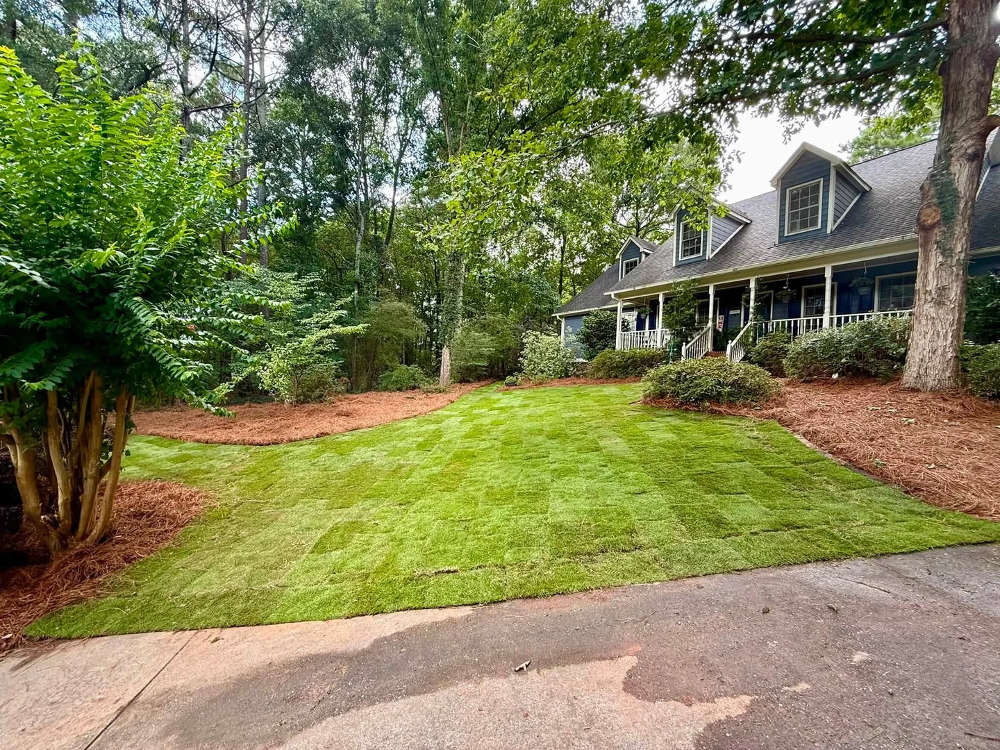
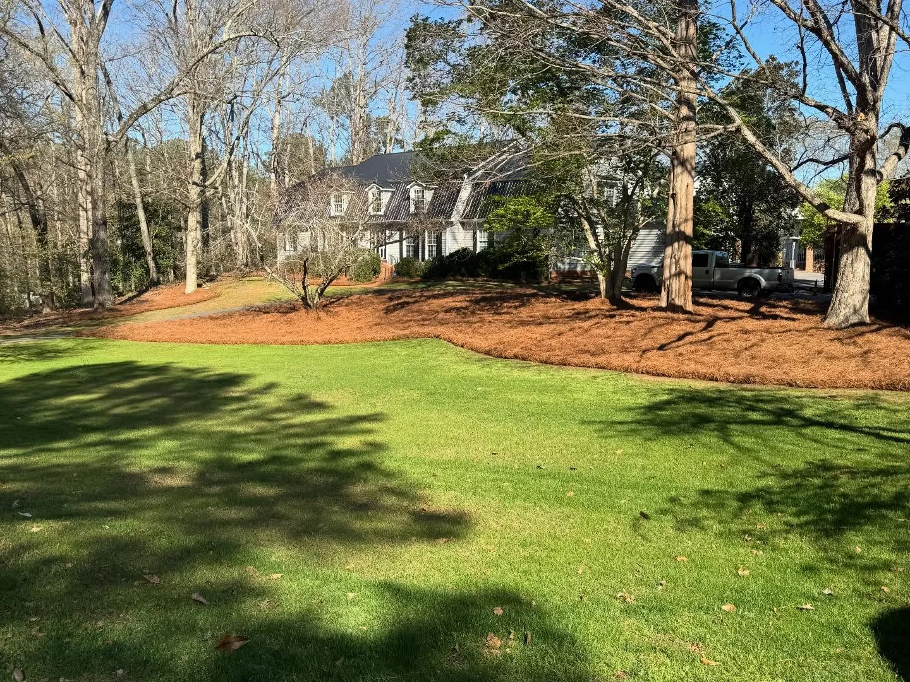
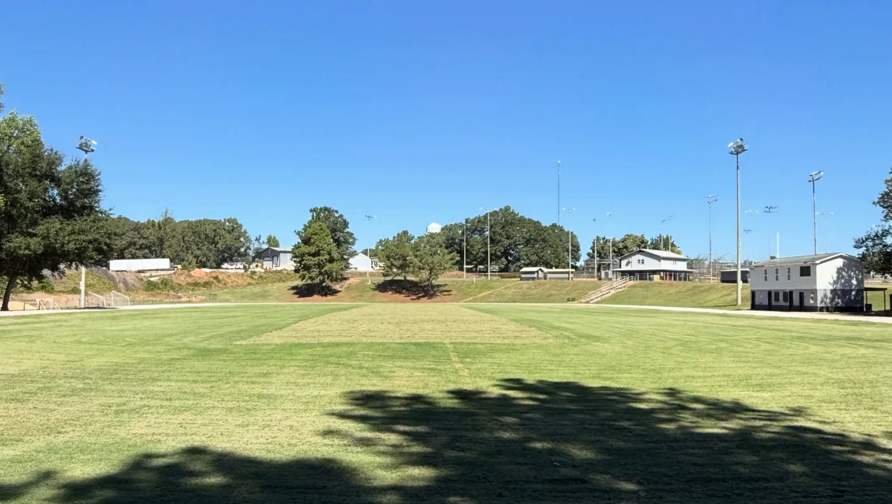
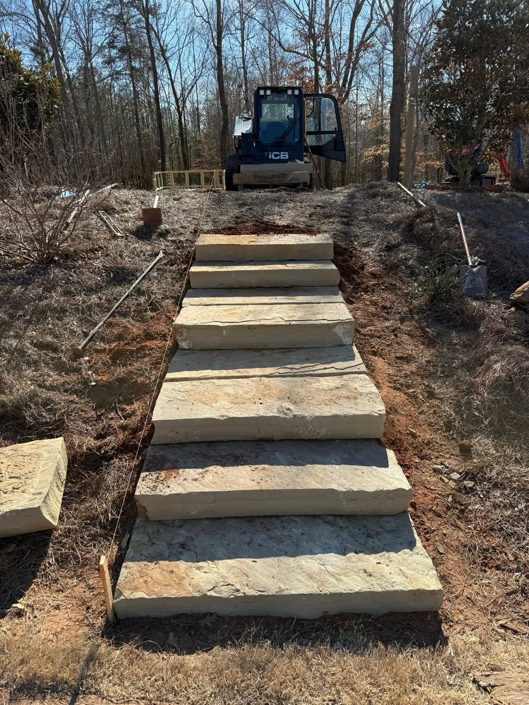

Good ground.
Great first impressions.
Lawn care that shows up. Landscape work that stands out. GreenScenez helps homes and businesses look their best, season after season.
Local roots. Real attention to every edge, every bed, every detail.
Every detail makes
a difference.
One experienced local team for the routine work and the projects that transform your landscape.
Lawn Maintenance
Consistent mowing, trimming, edging and cleanup for properties that always look cared for.
Learn more 02 / SERVICESLandscape Design & Installation
Planting plans and fresh installations that make your outdoor space feel intentional.
Learn more 03 / SERVICESTurf Care
Practical turf treatments and lawn-health support for stronger-looking grass.
Learn more 04 / SERVICESMulch & Pine Straw
Fresh beds, clean lines and seasonal refreshes with mulch or pine straw.
Learn more 05 / SERVICESSeasonal Bed Care
Seasonal color, bed upgrades and attention to the areas guests notice first.
Learn more 06 / SERVICESShrub & Plant Care
Shaping, selective pruning and plant care that support both health and appearance.
Learn moreGreat spaces.
Thoughtful details.
From fresh lawns and healthy landscapes to more involved outdoor projects, see a few scenes from the field.





It’s more than a yard.
It’s a first impression.
A great outdoor space should feel inviting, function beautifully and be simple to enjoy. We bring a thoughtful eye to every property—from the regular cut to the next big improvement.
Let's make the outside
your favorite part.
Tell us what your property needs. We'll talk through the right approach, then put a plan in motion.
Three steps.
One greener outlook.
Start the conversation.
Call or send a quick note with your location, service needs and vision.
Find your fit.
We discuss a practical service plan or project scope for your property.
Enjoy the difference.
Count on tidy workmanship, thoughtful follow-through and a landscape you can enjoy.
Your property has potential.
Let's bring it out.
Serving Danielsville and communities throughout Greater Athens.